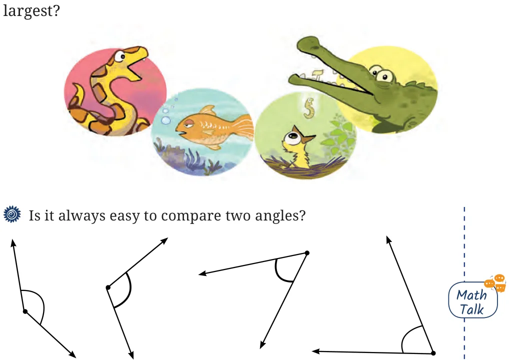
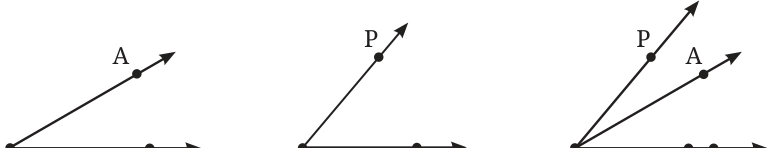
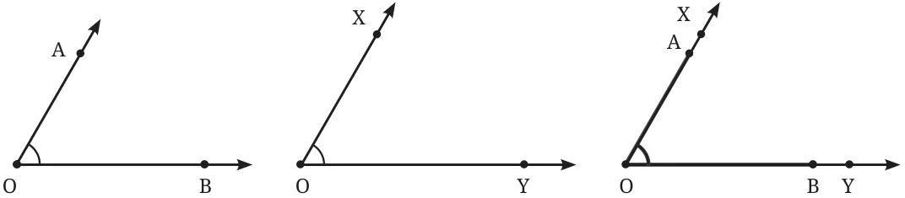
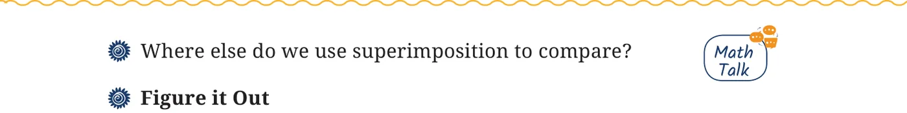
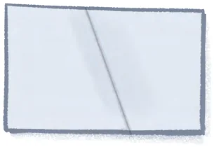
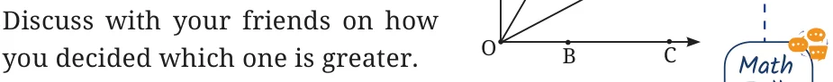

Look at these animals opening their mouths. Do you see any angles here? If yes, mark the arms and vertex of each one. Some mouths are open wider than others; the more the turning of the jaws, the larger the angle! Can you arrange the angles in this picture from smallest to

Here are some angles. Label each of the angles. How will you compare them? Draw a few more angles; label them and compare.
Comparing angles by superimposition
Any two angles can be compared by placing them one over the other, i.e., by superimposition. While superimposing, the vertices of the angles must overlap. After superimposition, it becomes clear which angle is smaller and which is larger.

The picture shows the two angles superimposed. It is now clear that \(\angle PQR\) is larger than \(\angle ABC\). Equal angles. Now consider \(\angle AOB\) and \(\angle XOY\) in the figure. Which is greater?

The corners of both of these angles match and the arms overlap with each other, i.e., OA \leftrightarrow OX and OB \leftrightarrow OY. So, the angles are equal in size. The reason these angles are considered to be equal in size is because when we visualise each of these angles as being formed out of rotation, we can see that there is an equal amount of rotation needed to move OB to OA and OY to OX. From the point of view of superimposition, when two angles are superimposed, and the common vertex and the two rays of both angles lie on top of each other, then the sizes of the angles are equal.

- 1.Fold a rectangular sheet of paper, then draw a line along the fold
created. Name and compare the angles formed between the fold and the sides of the paper. Make different angles by folding a rectangular sheet of paper and compare the angles. Which is the largest and smallest angle you made?

- 2.In each case, determine which angle is
greater and why.
- a.\(\angle AOB\) or \(\angle\)
- b.\(\angle AOB\) or \(\angle\)
- c.\(\angle XOB\) or

- 3.Which angle is greater:
Comparing angles without superimposition
Two cranes are arguing about who can open their mouth wider, i.e., who is making a bigger angle. Let us first draw their angles. How do we know which one is bigger? As seen Fig. 2.10